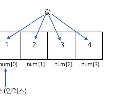

07. 배열 (Array): 데이터 기차
수십, 수백 개의 변수를 기차처럼 연결하여 반복문과 함께 요리해 봅시다!
1. 배열의 기초: 0번 칸부터 시작합니다!
변수가 상자 1개라면, 배열은 같은 크기의 상자들이 기차처럼 쭉 이어져 있는 형태입니다. C언어에서 가장 중요한 규칙은 상자 번호(인덱스)가 무조건 0번부터 시작한다는 것입니다.

▲ 배열의 구조: 5칸짜리 배열을 만들면 인덱스는 0부터 4까지 존재합니다.
🎒 기초 예제: RPG 아이템 인벤토리
배열의 진가는 for 반복문과 만났을 때 발휘됩니다. 배열의 인덱스를 반복문의 i로 대체하면 단 몇 줄로 모든 데이터를 검사할 수 있죠!
#include <stdio.h>
int main() {
// 5개의 아이템 수량을 담는 1차원 배열
int inventory[5] = {10, 20, 0, 5, 1};
printf("--- 나의 인벤토리 ---\n");
for(int i = 0; i < 5; i++) {
printf("%d번 칸 아이템 수량: %d개\n", i, inventory[i]);
}
return 0;
}2. ⚔️ 심화 예제: 가장 강한 몬스터 찾기 (최댓값)
배열 안에서 가장 큰 값을 찾는 것은 프로그래밍의 핵심 알고리즘입니다. 배열, 반복문, 조건문이 결합된 아주 훌륭한 예제입니다.
#include <stdio.h>
int main() {
int monster_hp[5] = {450, 1200, 320, 980, 150};
// 0번 칸의 몬스터가 가장 세다고 가정합니다.
int max_hp = monster_hp[0];
int boss_index = 0;
// 1번 칸부터 끝까지 싸움을 붙여봅니다.
for(int i = 1; i < 5; i++) {
// 기존 최댓값보다 더 쎈 놈이 나타나면 갱신!
if(monster_hp[i] > max_hp) {
max_hp = monster_hp[i];
boss_index = i;
}
}
printf("보스는 %d번 칸에 있으며, 체력은 %d입니다!\n", boss_index, max_hp);
return 0;
}3. 배열의 진화: 문자열 (String)
C언어에는 '문자열'이라는 별도의 기본 자료형이 없습니다. 대신 문자(char)를 배열로 나열해서 사용하죠. 여기서 핵심은 문자열의 끝을 알리는 \0 (NULL 문자)입니다.
▲ 문자열 배열: 마지막 칸에는 항상 눈에 보이지 않는 끝맺음 문자가 들어갑니다.
💻 예제: 문자열 배열의 비밀
#include <stdio.h>
int main() {
// "Hello"는 5글자지만, \0이 포함되어 실제 크기는 6칸입니다!
char greeting[] = "Hello";
printf("문자열 한 번에 출력: %s\n", greeting);
printf("3번 인덱스 문자만 뽑기: %c\n", greeting[2]); // 'l' 출력
return 0;
}4. 차원을 넘어서: 2차원 배열 (Matrix)
1차원 배열이 단순한 '기차'라면, 2차원 배열은 가로(행)와 세로(열)를 가진 '표(Table)'나 '바둑판'과 같습니다. 주로 게임 맵 데이터나 성적표를 만들 때 사용합니다.
▲ 2차원 배열: (행, 열)의 순서로 좌표를 찾아갑니다.
🔥 끝판왕 예제: 2차원 성적표 관리 프로그램
2차원 배열과 중첩 for문(반복문 안의 반복문)을 결합하여 3명의 학생이 가진 3과목 점수의 평균을 구해보겠습니다.
#include <stdio.h>
int main() {
// 3명(행)의 학생이 각각 3과목(열) 점수를 가짐
int scores[3][3] = {
{80, 90, 75}, // 0번 학생 (행 0)
{95, 85, 100}, // 1번 학생 (행 1)
{70, 60, 80} // 2번 학생 (행 2)
};
for(int i = 0; i < 3; i++) {
int total = 0; // 학생이 바뀔 때마다 총점을 0으로 초기화
// 한 학생의 3과목 점수를 모두 더함
for(int j = 0; j < 3; j++) {
total += scores[i][j];
}
printf("%d번 학생 총점: %d, 평균: %.2f\n", i+1, total, total/3.0);
}
return 0;
}💀 주의: 인덱스 탈출(Out of Bounds) 주의보!
배열을 다룰 때 가장 많이 하는 실수는 int arr[10];을 만들고 arr[10]에 접근하려 하는 것입니다. 인덱스는 무조건 0부터 9까지만 있다는 사실을 명심하세요! 허용되지 않은 구역을 침범하면 프로그램이 죽어버립니다.